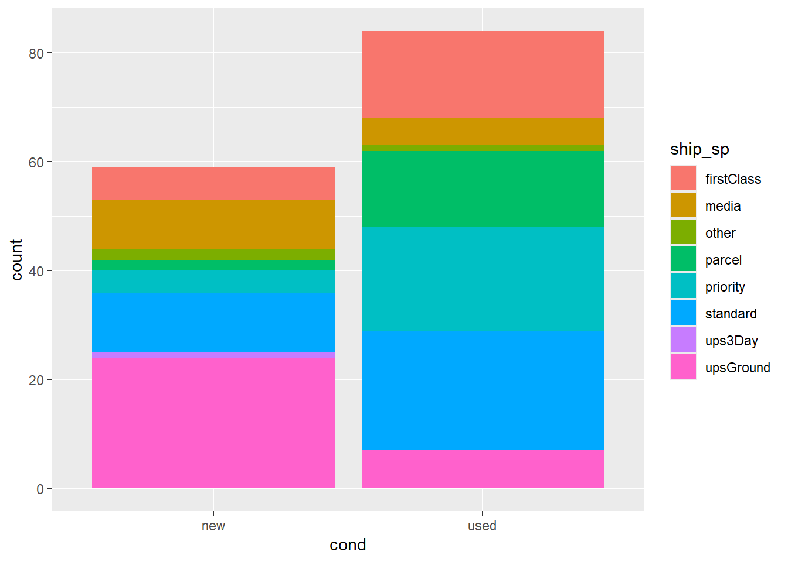
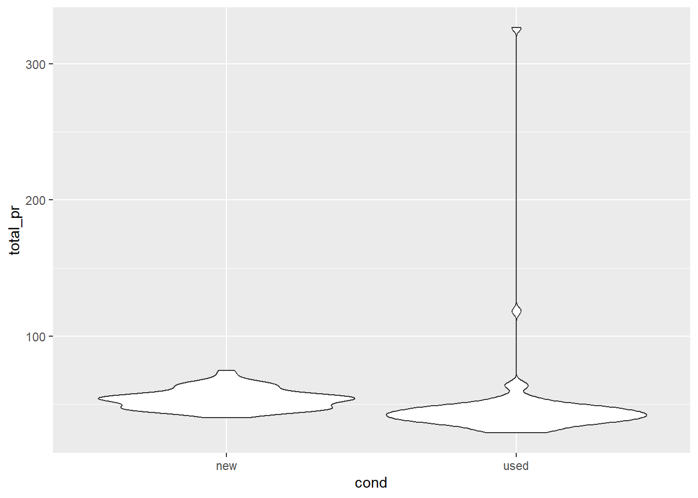

library(tidyverse)
library(scales)
library(ggridges)
library(gridExtra)Mario games + data visualization
Data visualization and transformation
Data Science with R
Important
Please reference the webR-intro programming exercise for information and instructions on how to interact with the programming exercise below.
Getting started
Please run the following code by clicking the green arrow just above the code chunk. When reading in the data, nothing will appear after you click the button. However, clicking the arrow ensures that your data are read in and can be used for the following programming exercise.
In this mini analysis we work with the data from the openintro package in R. These data are auction data from Ebay for the game Mario Kart for the Nintendo Wii, collected in October 2009. A key to these data can be found below:
| variable name | description |
| id | Auction ID assigned by Ebay. |
| duration | Auction length, in days |
| n_bids | Number of bids |
| cond | Game condition, either new or used |
| start_pr | Start price of the auction |
| ship_pr | Shipping price |
| total_pr | Total price, which equals the auction price plus the shipping price |
| ship_sp | Shipping speed or method |
| seller_rate | The seller뗩 rating on Ebay. This is the number of positive ratings minus the number of negative ratings for the seller |
| stock_photo | Whether the auction feature photo was a stock photo or not, either yes or no |
| wheels | Number of Wii wheels included in the auction. These are steering wheel attachments to make it seem as though you are actually driving in the game. |
| title | The title of the auctions |
Packages
We뗣l use tidyverse for the majority of the analysis and scales for pretty plot labels later on. ggridges allows us to make ridge plots, and gridExtra allows to arrange plots next to each other. These are ready to use for you in this programming exercise!
Get to know the data
We can use glimpse() to get an overview (or 랂limpse) of the data. Write the following code below to accomplish this task.
With your output, confirm that:
There are 143 rows
There are 12 variables (columns) in the dataset
Warning
If you receive the error Error: object 딼ario not found, go back and read in your data above.
Solution
glimpse(mario)Rows: 143
Columns: 12
$ id <dbl> 150377422259, 260483376854, 320432342985, 280405224677, 17
$ duration <int> 3, 7, 3, 3, 1, 3, 1, 1, 3, 7, 1, 1, 1, 1, 7, 7, 3, 3, 1, 7
$ n_bids <int> 20, 13, 16, 18, 20, 19, 13, 15, 29, 8, 15, 15, 13, 16, 6,
$ cond <chr> "new", "used", "new", "new", "new", "new", "used", "new",
$ start_pr <dbl> 0.99, 0.99, 0.99, 0.99, 0.01, 0.99, 0.01, 1.00, 0.99, 19.9
$ ship_pr <dbl> 4.00, 3.99, 3.50, 0.00, 0.00, 4.00, 0.00, 2.99, 4.00, 4.00
$ total_pr <dbl> 51.55, 37.04, 45.50, 44.00, 71.00, 45.00, 37.02, 53.99, 47
$ ship_sp <chr> "standard", "firstClass", "firstClass", "standard", "media
$ seller_rate <int> 1580, 365, 998, 7, 820, 270144, 7284, 4858, 27, 201, 4858,
$ stock_photo <chr> "yes", "yes", "no", "yes", "yes", "yes", "yes", "yes", "ye
$ wheels <int> 1, 1, 1, 1, 2, 0, 0, 2, 1, 1, 2, 2, 2, 2, 1, 0, 1, 1, 2, 2
$ title <chr> "~~ Wii MARIO KART & WHEEL ~ NINTENDO Wii ~ BRAND NEW Variables of interest
The variables we뗣l focus on are the following:
total_pr: total price of game sold plus shipping in USDship_sp: Shipping speed or methodfirstClassmediaotherparcelprioritystandardups3DayupsGround
cond: Binary variable representing the condition of the video gamenewused
Visualizing categorical data with ggplot2
First, let뗩 explore the variable cond. Specifically, let뗩 investigate how many new games were sold versus how many used games were sold by creating a barplot. Add the following correct geom_xx() to make a barplot of cond below.
Solution
ggplot(
mario,
aes(x = cond)
) +
geom_bar()Next, let뗩 fill in the bars by the shipping method each game was shipped with ship_sp.
Solution
ggplot(
mario,
aes(x = cond, fill = ship_sp)
) +
geom_bar()
The code above uses fill to color the segments of the boxplot by another categorical variable. Below, we change fill to color. What happens? Why?
ggplot(
mario,
aes(x = cond, color = ship_sp)
) +
geom_bar()
Solution
fill defines the color in which the geom is filled in with, while color defines the color in which the geom is outlined. A special exception to this is with scatterplots, where the dots are not treated as shapes to be filled in, and instead are filled in by color.
Count vs Proportion
Up to this point, our bar plot has counted up the number of observations for each condition of game, and has been segmented by the count of shipping method. Perhaps it is easier to compare shipping method across condition of game if we looked at the proportion of shipping method within each game. This can be achieved using position = "fill" in the geom_xx() statement. Alter the code below so that it includes position = fill, and comment on the relationship between condition and shipping method.
Solution
ggplot(
mario,
aes(x = cond, fill = ship_sp)
) +
geom_bar(position = "fill")
It appears that new Mario games were mainly shipped using upsGround, while used Mario games were shipped using standard shipping.
Relationships between numerical and categorical variables
Up to this point, we have been visualizing the relationship between categorical variables. What if we wanted to look at the relationships between different types of variables?
Boxplots
One way we can investigate the relationship between different types of variables is to create a boxplot. Below, we are going to create a boxplot using geom_boxplot() between the variables cond and total_pr. What information can we gather from the boxplots?
Solution
ggplot(
mario,
aes(x = cond, y = total_pr)
) +
geom_boxplot()We can infer that the median total price for new Mario games is higher for the new condition versus the used condition. There appears to be one outlier in new condition, and four outliers in the used condition. The IQR of the new condition is slightly larger than the used condition.
Violin plot
A violin plot is a lot like a box plot, but also shows us information about the density of the quantitative variable. Below, we have a violin plot that again shows the relationship between the condition (cond) of the Mario game, and the total price (total_pr) of the game (cost + shipping). Describe the relationship below.
ggplot(
mario,
aes(x = cond, y = total_pr)
) +
geom_violin()
Solution
It appears that there is a higher density of new games at a higher price than used games. Used games appear to have two potential outliers higher than any new game.
Ridge plots
Ridge plots, similar to violin plots, shows the distribution of a numeric variable across the levels of a categorical variable. In order to make this plot, we will use geom_density_ridges(). Add this geom to the following code below to make the ridge plots. Within this geom, set alpha equal to 0.5.
Solution
ggplot(
mario,
aes(x = total_pr, y = cond, fill = cond, color = cond)
) +
geom_density_ridges(alpha = 0.5)Picking joint bandwidth of 2.68Working with dplyr
dplyr is a grammar of data manipulation that helps you work with data. We are going to explore the following dplyr verbs on the mario data set:
select()filter()group_by()andsummarize()
In this demonstration, we are going to explore if there is a difference in mean total price for a used game, if the game was sold with or without the stock photo. Let뗩 assume that we are only interested in new games.
select()
First, let뗩 use select to only select the columns of the data set we are interested in: total_pr, cond, and stock_photo.
Solution
mario |>
select(total_pr, cond, stock_photo)Note, you could also reference the column by position, or subtract out the other columns using either names or position.
mario |>
select(4,7,10) cond total_pr stock_photo
1 new 51.55 yes
2 used 37.04 yes
3 new 45.50 no
4 new 44.00 yes
5 new 71.00 yes
6 new 45.00 yes
7 used 37.02 yes
8 new 53.99 yes
9 used 47.00 yes
10 used 50.00 no
11 new 54.99 yes
12 new 56.01 yes
13 new 48.00 yes
14 new 56.00 yes
15 used 43.33 yes
16 used 46.00 yes
17 new 46.71 yes
18 new 46.00 yes
19 new 55.99 yes
20 used 326.51 no
21 used 31.00 yes
22 new 53.98 yes
23 new 64.95 yes
24 new 50.50 yes
25 used 46.50 yes
26 new 55.00 yes
27 used 34.50 yes
28 used 36.00 yes
29 used 40.00 no
30 new 47.00 yes
31 used 43.00 yes
32 used 31.00 yes
33 used 41.99 yes
34 used 49.49 yes
35 used 41.00 yes
36 used 44.78 yes
37 used 47.00 no
38 used 44.00 no
39 new 63.99 yes
40 new 53.76 yes
41 new 46.03 no
42 used 42.25 no
43 used 46.00 no
44 new 51.99 yes
45 new 55.99 yes
46 used 41.99 yes
47 new 53.99 yes
48 used 39.00 yes
49 used 38.06 yes
50 used 46.00 no
51 new 59.88 yes
52 used 28.98 yes
53 used 36.00 no
54 new 51.99 yes
55 used 43.95 yes
56 used 32.00 yes
57 used 40.06 no
58 used 48.00 no
59 used 36.00 no
60 used 31.00 no
61 new 53.99 yes
62 used 30.00 yes
63 new 58.00 yes
64 used 38.10 no
65 used 118.50 no
66 used 61.76 yes
67 new 53.99 yes
68 used 40.00 yes
69 used 64.50 no
70 used 49.01 no
71 new 47.00 yes
72 used 40.10 no
73 new 41.50 no
74 new 56.00 yes
75 new 64.95 yes
76 used 49.00 no
77 used 48.00 yes
78 used 38.00 no
79 used 45.00 yes
80 used 41.95 yes
81 used 43.36 yes
82 new 54.99 yes
83 used 45.21 yes
84 used 65.02 no
85 used 45.75 yes
86 new 64.00 yes
87 used 36.00 yes
88 new 54.70 yes
89 new 49.91 yes
90 used 47.00 yes
91 used 43.00 no
92 used 35.99 yes
93 used 54.49 yes
94 used 46.00 yes
95 used 31.06 yes
96 used 55.60 yes
97 new 40.10 yes
98 new 52.59 yes
99 used 44.00 no
100 used 38.26 no
101 used 51.00 no
102 new 48.99 yes
103 new 66.44 yes
104 new 63.50 yes
105 used 42.00 no
106 new 47.00 yes
107 used 55.00 no
108 used 33.01 yes
109 new 53.76 yes
110 new 46.00 yes
111 used 43.00 yes
112 used 42.55 yes
113 used 52.50 yes
114 new 57.50 yes
115 new 75.00 yes
116 used 48.92 yes
117 new 45.99 yes
118 used 40.05 yes
119 new 45.00 yes
120 used 50.00 yes
121 new 49.75 yes
122 used 47.00 no
123 new 56.00 yes
124 used 41.00 no
125 new 46.00 no
126 used 34.99 yes
127 used 49.00 yes
128 new 61.00 yes
129 new 62.89 yes
130 new 46.00 yes
131 new 64.95 yes
132 used 36.99 no
133 used 44.00 yes
134 used 41.35 yes
135 used 37.00 no
136 new 58.98 yes
137 used 39.00 yes
138 used 40.70 no
139 used 39.51 yes
140 used 52.00 no
141 new 47.70 yes
142 used 38.76 no
143 new 54.51 yesmario |>
select(-c(1:3,5:6,8:9,11:12)) cond total_pr stock_photo
1 new 51.55 yes
2 used 37.04 yes
3 new 45.50 no
4 new 44.00 yes
5 new 71.00 yes
6 new 45.00 yes
7 used 37.02 yes
8 new 53.99 yes
9 used 47.00 yes
10 used 50.00 no
11 new 54.99 yes
12 new 56.01 yes
13 new 48.00 yes
14 new 56.00 yes
15 used 43.33 yes
16 used 46.00 yes
17 new 46.71 yes
18 new 46.00 yes
19 new 55.99 yes
20 used 326.51 no
21 used 31.00 yes
22 new 53.98 yes
23 new 64.95 yes
24 new 50.50 yes
25 used 46.50 yes
26 new 55.00 yes
27 used 34.50 yes
28 used 36.00 yes
29 used 40.00 no
30 new 47.00 yes
31 used 43.00 yes
32 used 31.00 yes
33 used 41.99 yes
34 used 49.49 yes
35 used 41.00 yes
36 used 44.78 yes
37 used 47.00 no
38 used 44.00 no
39 new 63.99 yes
40 new 53.76 yes
41 new 46.03 no
42 used 42.25 no
43 used 46.00 no
44 new 51.99 yes
45 new 55.99 yes
46 used 41.99 yes
47 new 53.99 yes
48 used 39.00 yes
49 used 38.06 yes
50 used 46.00 no
51 new 59.88 yes
52 used 28.98 yes
53 used 36.00 no
54 new 51.99 yes
55 used 43.95 yes
56 used 32.00 yes
57 used 40.06 no
58 used 48.00 no
59 used 36.00 no
60 used 31.00 no
61 new 53.99 yes
62 used 30.00 yes
63 new 58.00 yes
64 used 38.10 no
65 used 118.50 no
66 used 61.76 yes
67 new 53.99 yes
68 used 40.00 yes
69 used 64.50 no
70 used 49.01 no
71 new 47.00 yes
72 used 40.10 no
73 new 41.50 no
74 new 56.00 yes
75 new 64.95 yes
76 used 49.00 no
77 used 48.00 yes
78 used 38.00 no
79 used 45.00 yes
80 used 41.95 yes
81 used 43.36 yes
82 new 54.99 yes
83 used 45.21 yes
84 used 65.02 no
85 used 45.75 yes
86 new 64.00 yes
87 used 36.00 yes
88 new 54.70 yes
89 new 49.91 yes
90 used 47.00 yes
91 used 43.00 no
92 used 35.99 yes
93 used 54.49 yes
94 used 46.00 yes
95 used 31.06 yes
96 used 55.60 yes
97 new 40.10 yes
98 new 52.59 yes
99 used 44.00 no
100 used 38.26 no
101 used 51.00 no
102 new 48.99 yes
103 new 66.44 yes
104 new 63.50 yes
105 used 42.00 no
106 new 47.00 yes
107 used 55.00 no
108 used 33.01 yes
109 new 53.76 yes
110 new 46.00 yes
111 used 43.00 yes
112 used 42.55 yes
113 used 52.50 yes
114 new 57.50 yes
115 new 75.00 yes
116 used 48.92 yes
117 new 45.99 yes
118 used 40.05 yes
119 new 45.00 yes
120 used 50.00 yes
121 new 49.75 yes
122 used 47.00 no
123 new 56.00 yes
124 used 41.00 no
125 new 46.00 no
126 used 34.99 yes
127 used 49.00 yes
128 new 61.00 yes
129 new 62.89 yes
130 new 46.00 yes
131 new 64.95 yes
132 used 36.99 no
133 used 44.00 yes
134 used 41.35 yes
135 used 37.00 no
136 new 58.98 yes
137 used 39.00 yes
138 used 40.70 no
139 used 39.51 yes
140 used 52.00 no
141 new 47.70 yes
142 used 38.76 no
143 new 54.51 yesfilter()
The function filter() acts on the rows of the data set, and subsets the data set based on a condition. Let뗩 add on to our code and use the filter() function to subset the data to only look at used games.
Solution
mario |>
select(total_pr, cond, stock_photo) |>
filter(cond == "used") total_pr cond stock_photo
1 37.04 used yes
2 37.02 used yes
3 47.00 used yes
4 50.00 used no
5 43.33 used yes
6 46.00 used yes
7 326.51 used no
8 31.00 used yes
9 46.50 used yes
10 34.50 used yes
11 36.00 used yes
12 40.00 used no
13 43.00 used yes
14 31.00 used yes
15 41.99 used yes
16 49.49 used yes
17 41.00 used yes
18 44.78 used yes
19 47.00 used no
20 44.00 used no
21 42.25 used no
22 46.00 used no
23 41.99 used yes
24 39.00 used yes
25 38.06 used yes
26 46.00 used no
27 28.98 used yes
28 36.00 used no
29 43.95 used yes
30 32.00 used yes
31 40.06 used no
32 48.00 used no
33 36.00 used no
34 31.00 used no
35 30.00 used yes
36 38.10 used no
37 118.50 used no
38 61.76 used yes
39 40.00 used yes
40 64.50 used no
41 49.01 used no
42 40.10 used no
43 49.00 used no
44 48.00 used yes
45 38.00 used no
46 45.00 used yes
47 41.95 used yes
48 43.36 used yes
49 45.21 used yes
50 65.02 used no
51 45.75 used yes
52 36.00 used yes
53 47.00 used yes
54 43.00 used no
55 35.99 used yes
56 54.49 used yes
57 46.00 used yes
58 31.06 used yes
59 55.60 used yes
60 44.00 used no
61 38.26 used no
62 51.00 used no
63 42.00 used no
64 55.00 used no
65 33.01 used yes
66 43.00 used yes
67 42.55 used yes
68 52.50 used yes
69 48.92 used yes
70 40.05 used yes
71 50.00 used yes
72 47.00 used no
73 41.00 used no
74 34.99 used yes
75 49.00 used yes
76 36.99 used no
77 44.00 used yes
78 41.35 used yes
79 37.00 used no
80 39.00 used yes
81 40.70 used no
82 39.51 used yes
83 52.00 used no
84 38.76 used nogroup_by() and summarize()
Now that we have a subset of our data set that is relavent to our question of interest, we can calcualte the mean total price using group_by() and summarize(). Note that group_by() groups our data frame together by the specified variable so that we can calculate summary statistics (like the mean), at the group level instead of for the entire data frame using summarize(). Report which mean is higher. Is this the result you expected? Why or why not?
Solution
mario |>
select(total_pr, cond, stock_photo) |>
filter(cond == "used") |>
group_by(stock_photo) |>
summarize(mean_pr = mean(total_pr))# A tibble: 2 × 2
stock_photo mean_pr
<chr> <dbl>
1 no 54.8
2 yes 42.0The mean total price is higher for a game that did not include a stock photo versus games that did. This is not what I expected, and would have expected that including a stock photo would have increased the price. This may be due to other variables in the data set not being accounted for in our calculations.
Extension: mutate()
The total price reported in our data set is in US dollars (USD). At the time of writing this exercise, the US exchange rate to Canadian currency (CAD) is 1.37. Suppose we wanted to answer the same question as above, but in CAD instead of USD. We can use mutate()to create a new cad_total_pr column before taking the mean cad_total_pr by stock photo. Recreate your table above, but in CAD.
Solution
mario |>
select(total_pr, cond, stock_photo) |>
mutate(cad_total_pr = total_pr * 1.37) |>
filter(cond == "used") |>
group_by(stock_photo) |>
summarize(mean_pr_cad = mean(cad_total_pr))# A tibble: 2 × 2
stock_photo mean_pr_cad
<chr> <dbl>
1 no 75.0
2 yes 57.5Reflection questions
- Why do you believe we are studying the content above?
- List three topics that you feel very confident about from the content above.
- List three topics that you feel could use more practice (or you are more curious about) from the content above.